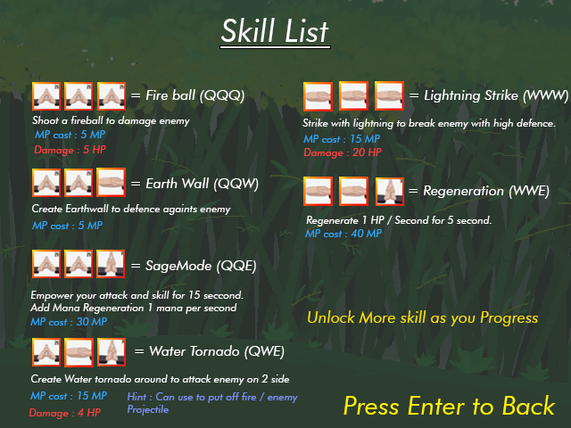
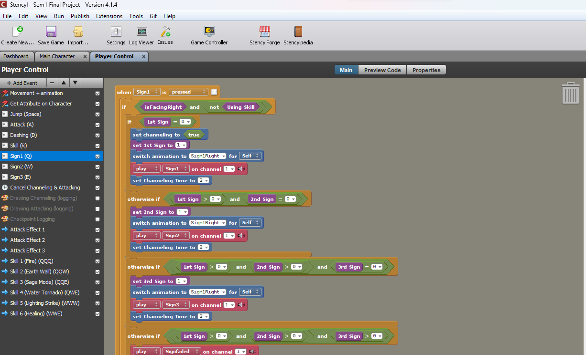

Legend of Zaruto
Game Preview
Student ProjectLegend of Zaruto is a 2D action-RPG game created using Stencyl (HTML5).
Legend of zaruto is game inspired by Ninja world of Naruto created by Masashi kishimoto. This is a student project game and designed to be like RPG game where player will go on mission and following the story after finishing the mission.
The game is focused more on the concept of casting skill where player need to combine ninja sign then cast the skill after finishing 3 ninja sign.
How it works
Each Ninja sign is assign with Number which is :
Q = 1
W = 2
E = 2
I Created several attribute for this to work which is :
1. Channeling (Boolean)
2. Channeling time (number)
3. 1st Sign (number)
4. 2nd Sign (number)
5. 3rd Sign (number)
All Number attribute default is 0
So the flow is , when player press any sign key (Q/W/E) , the channeling boolean will be set to true , channeling time increase by 2 second every time sign is pressed.
When player press any sign key , it will fill the 1st sign , if the first sign is filled or not 0 , then it will continue to fill the 2nd sign , and lastly 3rd sign.
When 3 sign is filled , player can press R to cast skill. The skill that is casted will be depends on the result of the multiply of 1st , 2nd , and 3rd sign.
Example :
1. Q W E = 1 x 2 x 3 = 6 , Because the total calculation is 6 then Player will cast Water tornado when R is pressed.
2. Q Q Q = 1 x 1 x 1 = 1 , Because the total calculation is 1 then player will cast fire ball when R is pressed.
3. Q Q (Blank only 1st and 2nd sign is filled) = 1 x 1 x 0 , because the total calculation is 0 then the player will not cast any skill.
When the channeling time of 2 seconds end , the channeling will set to false and all the sign will be reseted to 0.
Screenshot of the block code :
